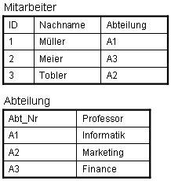

Datenintegrität von relationalen Datenbanken
Schlüsselintegrität
Unter dem Begriff der Integrität oder der
Konsistenz von Daten versteht man die Widerspruchsfreiheit der Datenbestände. Eine Datenbank ist
integer oder konsistent, wenn die gespeicherten Daten fehlerfrei erfasst sind
und den gewünschten Informationsgehalt korrekt wiedergeben. Die Datenintegrität
ist dagegen verletzt, wenn Mehrdeutigkeiten oder widersprüchliche Sachverhalte
zutage treten. Definitionsgemäß sind Relationen Mengen von Tupeln, die allein
durch ihre Werte unterschieden werden. Abgeleitet aus der Mengenlehre ist die
Eindeutigkeit der Elemente (Tupel bzw. Datensätze) zwingend. Die Tupel müssen
folglich eindeutig identifizierbar sein was durch eindeutige Schlüssel erreicht
wird. Diese Integrität wird im relationalen Datenbankmodell durch sogenannte
 Schlüsselkandidaten bzw.
Schlüsselkandidaten bzw.  Primärschlüssel gewährleistet. Man spricht
dann auch von der Schlüsselintegrität.
Primärschlüssel gewährleistet. Man spricht
dann auch von der Schlüsselintegrität.
| ID | Name | Vorname | Geburtsjahr |
|---|---|---|---|
| 111 | Meier | Hans | 1955 |
| 222 | Meier | Hans | 1985 |
Gegenstands-Integritätsbedingung
Die Gegenstands-Integritätsbedingung folgt direkt aus der Schlüssel-Integritätsbedingung und besagt, dass kein Primärschlüsselwert ohne Wert (=NULL oder {}) existieren darf. Falls Schlüssel ohne Wert (NULL) möglich wären könnten mehrere Tupel NULL als Schlüsselwert besitzen. Dies wiederspricht der Schlüsselintegrität da diese Tupel nicht mehr eindeutig identifizierbar sind.
| ID | Name | Vorname | Geburtsjahr |
|---|---|---|---|
| NULL | Meier | Hans | 1955 |
| NULL | Meier | Hans | 1985 |
Da der Primärschlüsselwert (Attribut ID) bei beiden Tupeln leer (NULL) ist, können wir die beiden Tupel nicht direkt identifizieren.
Referentielle Integrität
Beziehungen zwischen zwei Relationen
werden im relationalen Modell nun so hergestellt, dass die Domänen des
Primärschlüssels der einen Relation in die zweite Relation als  Fremdschlüsseldomänen (mit entsprechenden
Attributen) aufgenommen werden. referentielle Integritätsbedingungen verlangen,
dass aktuelle Fremdschlüsselwerte sich immer nur auf Primärschlüsselwerte von
existierenden Tupeln beziehen. Die meisten der heutigen relationalen
Fremdschlüsseldomänen (mit entsprechenden
Attributen) aufgenommen werden. referentielle Integritätsbedingungen verlangen,
dass aktuelle Fremdschlüsselwerte sich immer nur auf Primärschlüsselwerte von
existierenden Tupeln beziehen. Die meisten der heutigen relationalen  Datenbanksysteme unterstützen die
automatische Einhaltung der referentiellen Integrität.
Datenbanksysteme unterstützen die
automatische Einhaltung der referentiellen Integrität.

Beispiel zur referentiellen IntegritätDie Tabelle „Abteilung“ hat die Abteilungsnummer als Primärschlüssel.
Dieser wird in der Tabelle „Mitarbeiter“ als Fremdschlüssel verwendet, um die
Abteilungszugehörigkeit eines Mitarbeiters zu bestimmen. Im Beispiel erfüllt die
Fremd-Primärschlüssel-Beziehung die Regel der referentiellen Integrität, da alle
Abteilungsnummern des Fremdschlüssels aus der Tabelle „Mitarbeiter“ in der
Tabelle „Abteilung“ als Primärschlüsselwerte existieren. In unserem Beispiel ist
also die Regel der referentiellen Integrität nicht verletzt. Nehmen wir an, wir
möchten in die Tabelle „Mitarbeiter“, ein neues Tupel einfügen:
„Id: 4, Weber, A5“
Da in der Tabelle
„Abteilung“ der Primärschlüssel „A5“ nicht existiert verstoßen wir gegen die
Regel der referentiellen Integrität. Unsere Einfügeoperation wird abgewiesen,
wenn das Datenbanksystem die referentielle Integrität unterstützt.
Exkurs Normalisierung von Relationen... (Klicken Sie hier für mehr Informationen)
Bearbeiten Sie...
- Schützt das Konzept der Integrität vor falschen Attributwerten?
- Sind Schlüsselfelder in Relationen zwingend notwendig?
- Analysieren Sie unter Berücksichtigung Ihrer Antwort die Aussagen zur Gegenstands-Integritätsbedingung